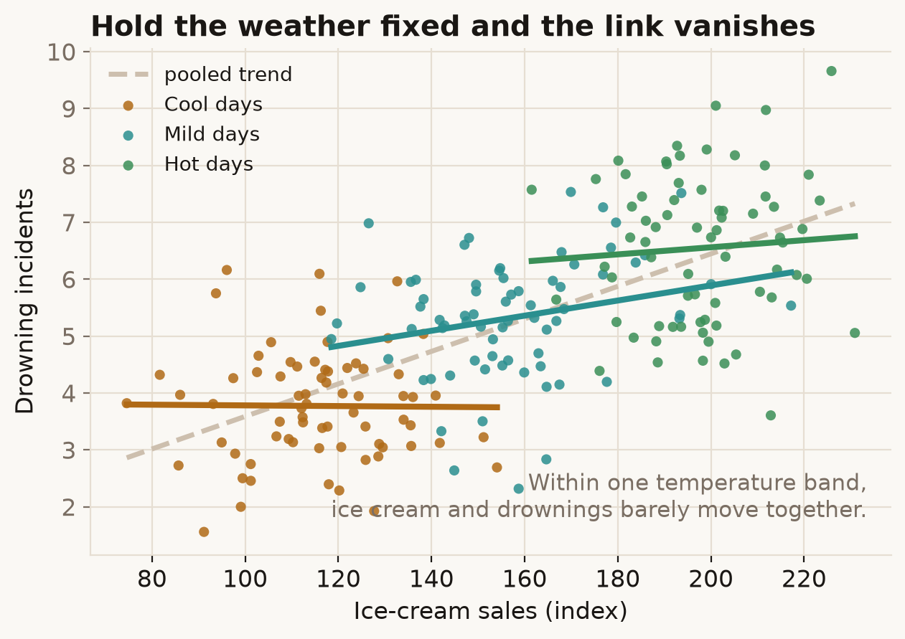

Two things move together, so it looks like one drives the other. Often neither does — a hidden third thing is pushing both, and the link between them is just its shadow.
Try it
On days when more ice cream is sold, more people drown. Drag from Ignore weather to Group by temperature.
What's going on
Ignore the weather and the link is strong and upward. But ice cream doesn't make anyone drown. Hot days do both: they sell ice cream and send people to the water. Once you compare days that share the same temperature — each coloured band — the supposed link between ice cream and drownings flattens to nothing.
Temperature is a confounder: a common cause sitting upstream of both things you measured. Because it drives each of them, it manufactures a correlation between them that has no causal link behind it. The fix is to compare like with like — hold the confounder fixed (here, by grouping on temperature) so it can't do the talking.

In the real world
In 2000 the physicist Robert Matthews showed, across 17 European countries, a statistically significant correlation between the number of breeding stork pairs and the number of human births (p = 0.008). Storks do not deliver babies. The confounder is land area: bigger countries have more storks and more people. Account for area and the correlation evaporates — a deliberately absurd example chosen to make the point that significance is not causation.
How not to get fooled
When two things correlate, ask what sits upstream of both. A confounder has to be a plausible common cause — something that influences your supposed cause and your effect independently. Randomised experiments break confounding by assigning the cause at random; with observational data you have to find the confounders and adjust for them, and you can never be sure you found them all.
Sources
- R. Matthews (2000), Storks Deliver Babies (p = 0.008), Teaching Statistics, 22(2): 36–38. doi
- J. Pearl (2009), Causality: Models, Reasoning, and Inference (2nd ed.), Cambridge University Press — the modern treatment of confounding and the back-door criterion.
- K. J. Rothman, S. Greenland & T. L. Lash (2008), Modern Epidemiology (3rd ed.) — confounding and its control.